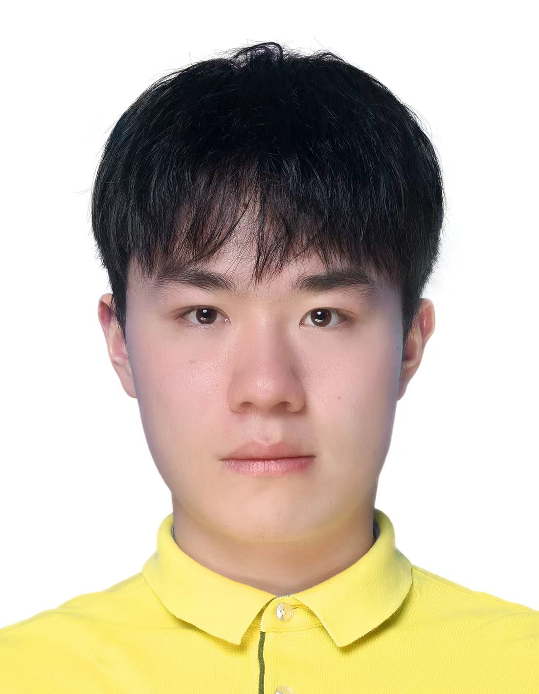

An AI-assisted Clinical Decision Support System for Green Classification of Cystocele on Dynamic Transperineal Ultrasound
Journal of Medical Systems, 50, 127 (2026)已发表

我是东北大学与英国邓迪大学联合培养项目的生物医学工程本科生，目前在邓迪大学完成本科最后一年的学习，预计于 2027 年 6 月毕业。
我的研究以医学人工智能为中心，主要关注动态超声判读、病灶与介入器械的实时定位、多模态临床决策支持，以及脑影像与组织学信息的跨尺度分析。相关工作覆盖模型设计、独立或前瞻性测试、模型解释和读者研究，希望让算法的评价更贴近真实临床使用场景。
我关注可靠、可解释并能够融入临床流程的智能系统，也参与过医疗机器人的视觉感知与控制研究。未来希望继续探索医学影像、组织结构与分子和细胞状态之间的联系，并将工程方法转化为具有实际医学价值的工具。
将在 MICCAI 2026 CMMCA Workshop 作 TriSCoV-Net 口头报告。 [海报]
动态 TPUS 临床决策支持研究发表于 Journal of Medical Systems。 [论文]
前往英国邓迪大学，完成本科最后一年的学习。
TriSCoV-Net 被 MICCAI 2026 CMMCA Workshop 接收为口头报告。 [海报]
获第十一届全国大学生生物医学工程创新设计竞赛全国一等奖。
获第十九届全国大学生软件创新大赛全国一等奖。
获第十九届全国大学生软件创新大赛东北赛区一等奖。
参与的 AI 导航研究发表于 World Journal of Surgical Oncology。 [论文]
参与的实时超声定位研究发表于 Frontiers in Oncology。 [论文]
获第十届全国大学生生物医学工程创新设计竞赛全国一等奖。
获 RoboMaster 2024 机甲大师超级对抗赛全国一等奖（季军）。
获 RoboMaster 2024 机甲大师超级对抗赛南部区域赛一等奖（亚军）。
进入东北大学，开始生物医学工程专业学习。
已发表期刊论文与会议工作。完整论文列表见 Google Scholar ↗
Hongjie Zhu, Xin Geng, Huayuan Zhou, Wei Guo, Yin Dai, Hao Zhang, Meng Dong, Hong Li, Xinlu Wang
Journal of Medical Systems, 50, 127 (2026)已发表
Hongjie Zhu, Huayuan Zhou, Hao Tang, Hanyu Liu, Chao Li
MICCAI 2026 CMMCA Workshop已接收 · 2026年9月27日口头报告
X. Shao, Y. Shen, P. Sun, Y. Sun, X. Ju, H. Zhu, H. Li, Q. Li, R. Ting, J. Liu, Y. Wang, Q. Guo, Y. Ma, X. Fei, H. Sun, J. Cui
World Journal of Surgical Oncology, 23, 433 (2025)已发表
H. Sun, H. Zhu, M. Zhang, H. Li, X. Shao, Y. Shen, P. Sun, J. Li, J. Yang, L. Chen, J. Cui
Frontiers in Oncology, 15, 1675180 (2025)已发表
竞赛获奖经历，按时间倒序排列。
三等奖学金
全国一等奖
全国一等奖
东北赛区一等奖
全国一等奖
全国一等奖（季军）
南部区域赛一等奖（亚军）
2 个国家／地区·3 次访客记录
访问地区数据更新
即时计数暂时无法加载，地图保留最近一次成功更新的记录。
地区按网络信息估算，标记为国家／地区层级；地图数据每六小时同步，可能包含本人及自动访问。 地图来源